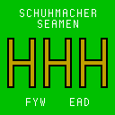
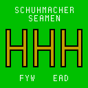
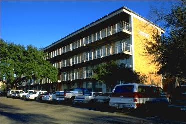

![[Texas A&M logo]](aggies.gif) 

If we were a Corps outfit, we’d be H-3.
If we were a frat, we’d be Eta Eta Eta.
But we’re not.
We’re . . .
Henry C. Schuhmacher Hall

Select for larger photograph
The original Schuhmacher Hall, also known as Dorm 7, was located on the Corps of Cadets quadrangle on the south side of campus from 1939 until 1969, when it was renamed Leonard Hall in honor of Congressional Medal of Honor winner Turney W. Leonard. In 1964, the current Schuhmacher Hall was built on the north side of campus. In 1973, Schuhmacher Hall became the first civilian residence hall in the history of A&M to top the 3.0 GPR mark.
Schuhmacher Hall is named for Henry C. Schuhmacher of Houston, head of a wholesale grocery business bearing his name. He became a member of the Board of Directors of Texas A&M in 1925. Mr. Schuhmacher served as chairman of the Prairie View State Normal and Industrial College Committee of the Board and devoted much time and interest in behalf of that institution. He also served as a member of the Board Committees on Auditing and Finances and as a member of the Executive Committee. Mr. Schuhmacher died in 1940.
The residents of Schuhmacher Hall, known as the Seamen, have been building Fightin’ Texas Aggie Bonfire for over thirty years. There are four lines of Bonfire pots, all traditionally held by Pissheads. The Yellow Pot (established in 1982) leads Bonfire activities for the dorm, assisted by the Puke Pot, the Drunk Pot and the Clueless Pot (also known as “Hoss Line”). During the 1990s the Seamen went to Cut with the Hobby Heartthrobs and the Legett Longnecks. Other dorm activities included Replant, Big Event and attending traditional Aggie events such as Muster and Silver Taps. Schuhmacher also held a baseball throw in front of Sbisa each year and adopted two miles of U.S. Highway 21 between Bryan and Caldwell. The famous HHH symbol derives from the fact that, although often misspelled, Schuhmacher properly contains three Hs. Dorm yells in the ’80s and ’90s included the Dong yell, the Seamen yell, the Walton Wussies yell and the K Ramp yell, none of which is appropriate for reproduction here. The first known Schuhmacher yell, back when residents were known as the Shockers, was
Schuhmacher Shockers!
Closest to the Chicken!
Never took a lickin’!
Best damn dorm on campus!
In 2005, for the first time since Bonfire fell in 1999, Schuhmacher had new Crew Chiefs. The Clueless, Drunk and Puke Pot lines were renewed and continue to exist, leading Schuhmacher’s work on Bonfire. Then, in 2010, Schuhmacher earned its own Yellow Pot, reestablishing the four separate traditional lines.
This document is maintained by Rob LeGrand ’98. Please e-mail errors and suggestions to honky98@gmail.com. Thank you!
|
FYW |
NO FRATS |
EAD |
{kind=link}